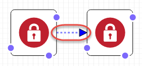

Panel de lienzo
Designer muestra sus recursos de plantilla en forma de diagrama en el panel canvas (lienzo). En este panel puede modificar el diseño del diagrama, añadir o eliminar recursos y añadir o eliminar conexiones entre recursos. Por ejemplo, puede añadir un grupo de Auto Scaling y una configuración de lanzamiento del panel Resource types (Tipos de recursos) al panel canvas (lienzo). Para conectar estos recursos relacionados, arrastre una conexión entre ellos.
¿Cómo modela Designer los recursos?
Al arrastrar un recurso desde el panel Resource types (Tipos de recursos) al panel canvas (lienzo), Designer lo modela como un contenedor o un objeto cuadrado.
- Contenedores
-
Los recursos de los contenedores son rectángulos de tamaño variable que pueden contener otros recursos. Por ejemplo, Designer modela el tipo de recurso
AWS::EC2::VPCcomo contenedor. Puede arrastrar los recursos, como una subred, a la VPC.Recurso de contenedor

- Objetos cuadrados
-
Los objetos cuadrados no pueden cambiar de tamaño ni contener otros recursos. Por ejemplo, Designer modela el tipo de recurso
AWS::EC2::Instancecomo objeto cuadrado.Objeto cuadrado

Conexión de recursos
Se conectan recursos para crear asociaciones entre recursos relacionados. Por ejemplo, cuando añade una gateway de Internet y una VPC al panel canvas (lienzo), no tienen relación. Para adjuntar la puerta de enlace a la VPC, debe conectarlos. El método para conectar recursos depende del tipo de recurso y cómo modela Designer el recurso. Las siguientes descripciones y cifras explican cada método.
- Incorporación de recursos para contenedores
-
Al arrastrar un recurso válido a contenedores, Designer crea automáticamente las asociaciones entre el recurso y el contenedor. Por ejemplo, las VPC son los recursos contenedores; puede arrastrar una subred en una VPC y Designer asocia automáticamente los dos recursos.

Estas asociaciones están representados en la plantilla como una función intrínseca
Ref, tal y como se muestra en el ejemplo siguiente:JSON
"PublicSubnet": { "Type": "AWS::EC2::Subnet", "Properties": { "VpcId": { "Ref": "VPC" }, "CidrBlock": "10.0.0.0/24" }YAML
PublicSubnet: Type: 'AWS::EC2::Subnet' Properties: VpcId: !Ref VPC CidrBlock: 10.0.0.0/24En algunos casos, soltar un recurso en un contenedor no crea una asociación; debe arrastrar una conexión entre los recursos (consulte el siguiente método para obtener información acerca de arrastrar conexiones entre recursos). Para ver si Designer asocia recursos, utilice el editor de JSON y YAML integrado para buscar un
Refde un recurso a otro. Por ejemplo, cuando añade un grupo de Auto Scaling en un contenedor de subred, Designer no especifica la propiedad (subred)VPCZoneIdentifierdel grupo. Para asociar los dos recursos, debe arrastrar una conexión desde el grupo de Auto Scaling a la subred. - Arrastrar conexiones entre recursos
-
El borde de cada cuadrado y recurso de contenedor tiene uno o varios puntos, que representan los recursos con los que puede crear conexiones. Para crear una conexión, arrastre una línea de conectores desde el punto hasta el tipo de recurso correspondiente. Por ejemplo, para adjuntar una puerto de enlace a Internet a la VPC, arrastre una línea desde el punto del archivo adjunto del puerto de enlace de la VPC a cualquier parte de la VPC.

Estas asociaciones se representan en la plantilla como una función intrínseca
Refo como un tipo de recurso independiente. Por ejemplo, al conectar una gateway a Internet con una VPC, Designer crea un tipo de recursoAWS::EC2::VPCGatewayAttachmenten la plantilla para asociarlos. Los recursos como estos no se encuentran en el panel Resource types (Tipos de recurso).JSON
"VPCGatewayAttachment": { "Type": "AWS::EC2::VPCGatewayAttachment", "Properties": { "InternetGatewayId": { "Ref": "InternetGateway" }, "VpcId": { "Ref": "VPC" } }YAML
VPCGatewayAttachment: Type: 'AWS::EC2::VPCGatewayAttachment' Properties: InternetGatewayId: !Ref InternetGateway VpcId: !Ref VPC - Codificación de conexiones entre recursos
-
En algunos casos, debe editar la plantilla de JSON o YAML para crear conexiones, como cuando se conectan dos grupos de seguridad. Cuando debe editar el JSON o YAML para crear conexiones, debe crear conexiones de forma rígida (conexiones de líneas discontinuas). No se pueden crear ni editar estas conexiones en el panel canvas (lienzo).
Normalmente, al integrar referencias (
Ref) dentro de la propiedad de un recurso, debe crear conexiones rígidas. Por ejemplo, puede definir una conexión entre dos grupos de seguridad donde un grupo de seguridad tiene una regla de entrada integrada que permite el tráfico del otro. El siguiente recursoWebServerSecurityGrouptiene una regla de entrada con una referencia al recursoPublicLoadBalancerSecurityGroup.JSON
"WebServerSecurityGroup": { "Type": "AWS::EC2::SecurityGroup", "Properties": { "VpcId": { "Ref": "VPC" }, "GroupDescription": "Allow access from HTTP and SSH traffic", "SecurityGroupIngress": [ { "IpProtocol": "tcp", "FromPort": 80, "ToPort": 80, "CidrIp": "0.0.0.0/0" }, { "IpProtocol": "tcp", "FromPort": 22, "ToPort": 22, "CidrIp": { "Ref": "SSHLocation" } } ] } ...YAML
WebServerSecurityGroup: Type: 'AWS::EC2::SecurityGroup' Properties: VpcId: !Ref VPC GroupDescription: Allow access from HTTP and SSH traffic SecurityGroupIngress: - IpProtocol: tcp FromPort: 80 ToPort: 80 CidrIp: 0.0.0.0/0 - IpProtocol: tcp FromPort: 22 ToPort: 22 CidrIp: !Ref SSHLocation
Acceso a acciones de recursos comunes con el menú de recursos
El menú Resource (Recurso) ofrece un acceso sencillo a las acciones de recursos comunes: editar las propiedades de recursos, duplicar un recurso, eliminar un recurso o consultar la documentación del recurso. Para ver el menú Resource (Recurso), haga clic con el botón derecho en un recurso en el panel canvas (lienzo). El enlace de documentación pasa a la referencia de la plantilla, que describe las propiedades y la sintaxis de dicho recurso.
Menú de recursos

Definición de dependencias explícitas
Para especificar el orden en el que AWS CloudFormation crea y elimina los recursos, se pueden crear dependencias explícitas. Las dependencias explícitas son útiles para anular la creación y eliminación paralelas de los recursos. AWS CloudFormation determina automáticamente qué recursos de una plantilla se pueden procesar en paralelo y cuáles no. Cuando especifica una propiedad que hace referencia a un atributo de otra fuente (con la función intrínseca Ref) o bien obtiene un atributo de otro recurso (con la función intrínseca Fn::GetAtt) en la misma plantilla, esto implica una dependencia y AWS CloudFormation las crea en el orden correcto.
Sin embargo, en algunos casos, debe definir las dependencias de forma explícita. Por ejemplo, una regla de enrutamiento no puede utilizar una puerta de enlace de Internet hasta que la puerta de enlace se haya adjuntado a la VPC. Normalmente, AWS CloudFormation crea la regla de enrutamiento inmediatamente después de que se crea la una puerto de enlace a Internet debido a una dependencia implícita. Sin embargo, AWS CloudFormation podría crear la regla antes de que la puerta de enlace de Internet se adjunte a la VPC, lo que provoca un error. Por lo tanto, debe definir una dependencia de forma explícita al adjuntar una puerta de enlace a la VPC.
Para crear una dependencia explícita, arrastre una línea desde el punto DependsOn (*) en la ruta al asociar un puerto de enlace a la VPC.

Para obtener más información acerca de cuándo habría que crear una dependencia explícita, consulte Atributo DependsOn.
JSON
En JSON, estas dependencias explícitas se representan como un atributo DependsOn en un recurso, como se muestra en el siguiente ejemplo:
"PublicRoute": { "Type": "AWS::EC2::Route", "DependsOn": "VPCGatewayAttachment", "Properties": { "DestinationCidrBlock": "0.0.0.0/0", "RouteTableId": { "Ref": "PublicRouteTable" }, "GatewayId": { "Ref": "InternetGateway" } }
YAML
En YAML, estas dependencias explícitas se representan como un atributo DependsOn en un recurso, como se muestra en el siguiente ejemplo:
PublicRoute: Type: 'AWS::EC2::Route' DependsOn: - VPCGatewayAttachment Properties: DestinationCidrBlock: 0.0.0.0/0 RouteTableId: !Ref PublicRouteTable GatewayId: !Ref InternetGateway